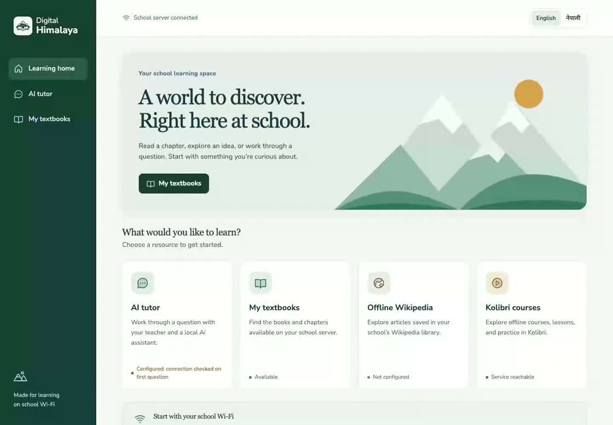
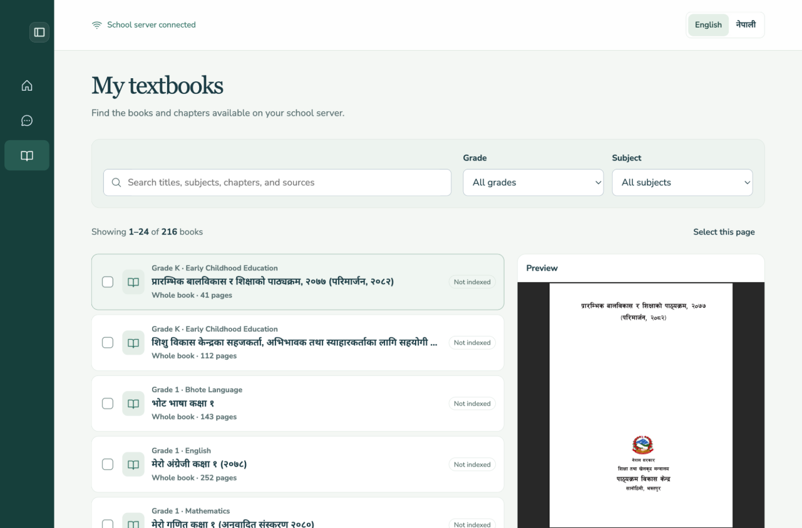
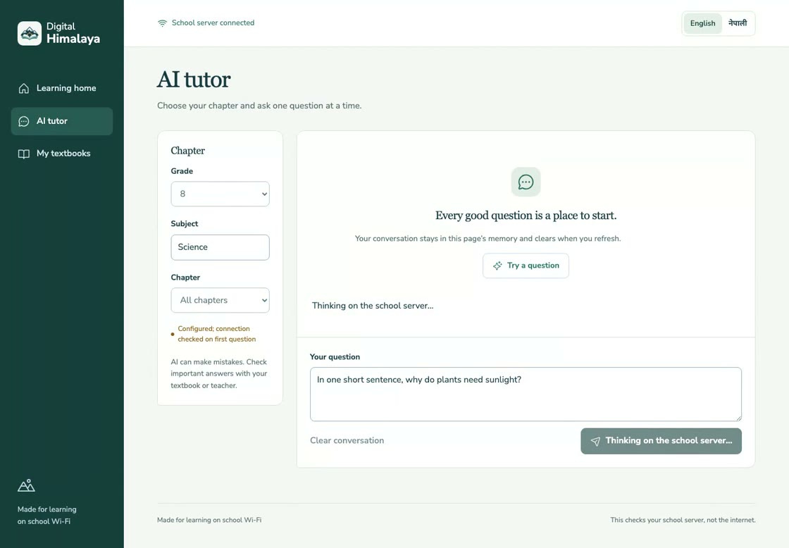
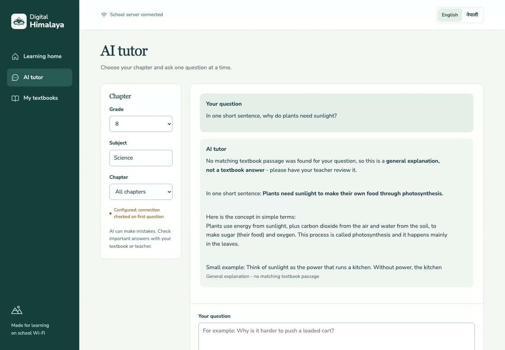
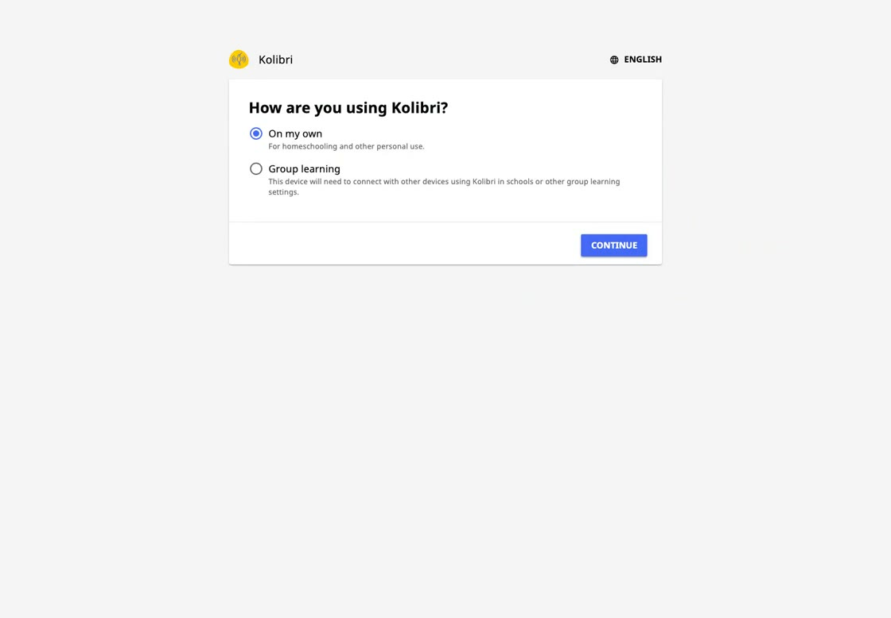

How learning moves
From a school library to a question worth checking.
Books and installed lessons can stay on the school network. The tutor is optional. When its services are configured, it can answer from matching textbook pages and show what it used.
The learner journey
A simple path, with each handoff visible.
Teachers choose the material. The student portal serves it locally. The tutor adds a separate, reviewable path for questions.
-
Staff prepares the material
Import only content the school has reviewed.
An authorized staff member imports a PDF or text file. The API stores its catalog details and page-aware text in the school's data volume. Copyright and curriculum approval happen before import.
Import flow tested locally -
Student joins school Wi-Fi
Open the portal on a phone or computer.
The student browser connects to the local portal. Imported books are served by the school system. Kolibri lessons and Kiwix references are available only after their services and content have been set up.
Portal and file access tested -
Tutor finds relevant pages
Ask for help when the school enables the service.
With local embeddings and Qdrant configured, the API can search approved textbook passages. Chat can use local Ollama or a configured OpenAI-compatible provider. A hosted provider receives the question, recent conversation, and retrieved excerpts.
AI disabled by default · Qdrant unconfigured locally -
Student and teacher check the answer
Sources are visible, and a no-match answer says so.
Retrieved pages appear with the answer for review. If no passage matches, the tutor labels its response as a general explanation instead of implying it came from a textbook. Teachers remain responsible for checking accuracy and language quality.
Source and no-match states covered by tests
Captured prototype flow
Scroll through the screens. Play the whole run.
The frame follows the story as you read. The recording is a real local prototype session, not a school deployment.





-
The local portal
Start with the resources on the school server.
The home screen shows the local connection and which optional services are reachable or still unconfigured.
-
The local book catalog
Find, filter, and preview a textbook.
Search the school library by grade and subject, move through pages, select titles, and preview a book before opening it.
-
A question to the tutor
Ask in a short, clear sentence.
This recording shows one test question about sunlight and photosynthesis. It contains no student account or personal data.
-
An honest fallback
See when the answer has no textbook source.
No Qdrant endpoint was configured for this recording, so the tutor labels its response as general and asks the learner to check with a teacher.
-
Separate classroom service
Kolibri keeps its own setup and course library.
The recording ends at Kolibri's first-run screen. It demonstrates the handoff, not a configured facility or installed learning channels.
Full recording
Watch the 13-second prototype session
Silent screen capture from local integration testing. AI is normally disabled by default; this tutor response is not textbook-grounded.
What works without the WAN
Local access depends on what was prepared.
Can stay on the school network
- The portal and books already imported into its local catalog.
- Kolibri channels already installed on the school server.
- Chat handled by a reachable local Ollama service, when enabled.
Needs setup or an internet connection
- Hosted AI calls and downloading new material from online providers.
- Local tutor retrieval until Ollama embeddings and Qdrant are configured.
- Kolibri lessons until staff complete setup and import approved channels.
Offline readiness is a deployment check, not a property of the word “offline-first.” Every required book, lesson, service, and device still needs a WAN-off test at school.
Where the build stands
See what works today and what still needs proof.
The project status page separates software checks from school acceptance.